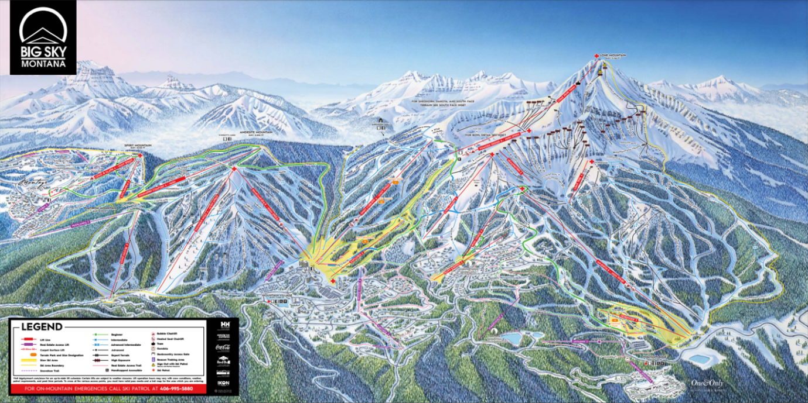

<!DOCTYPE html>
<html lang="en">
<head>
    <meta charset="UTF-8">
    <meta name="viewport" content="width=device-width, initial-scale=1.0">
    <title>Homework 2</title>

    <link rel="stylesheet" href="https://unpkg.com/leaflet@1.9.4/dist/leaflet.css"
     integrity="sha256-p4NxAoJBhIIN+hmNHrzRCf9tD/miZyoHS5obTRR9BMY="
     crossorigin=""/>

     <script src="https://unpkg.com/leaflet@1.9.4/dist/leaflet.js"
     integrity="sha256-20nQCchB9co0qIjJZRGuk2/Z9VM+kNiyxNV1lvTlZBo="
     crossorigin=""></script>

     <script src="flowering_cherries_4326.geojson"></script>

</head>
<body>

    <div id="mapid"></div>
    <style>
        #mapid { width: 900px; height: 500px; }
    </style>

    <script>
        var map = L.map('mapid').setView([45.28076, -111.40663], 17);

        L.tileLayer('https://tile.openstreetmap.org/{z}/{x}/{y}.png', {
         maxZoom: 19,
         attribution: '&copy; <a href="http://www.openstreetmap.org/copyright">OpenStreetMap</a>'
        }).addTo(map);

        var snowflakeIcon = L.icon({
            iconUrl: 'https://static.vecteezy.com/system/resources/thumbnails/001/194/635/small/snowflake.png',
            iconSize: [36, 36],
            iconAnchor: [18, 36],
            popupAnchor: [0, -30]
        });

        var bigSkyPopup = `
            <b>Lone Mountain – Big Sky, MT</b><br/>
            Elevation: 11,166 ft<br/>
            
        `;

        L.marker([45.28076, -111.40663], { icon: snowflakeIcon })
            .addTo(map)
            .bindPopup(bigSkyPopup)
            .openPopup();

    </script>
    
</body>
</html>